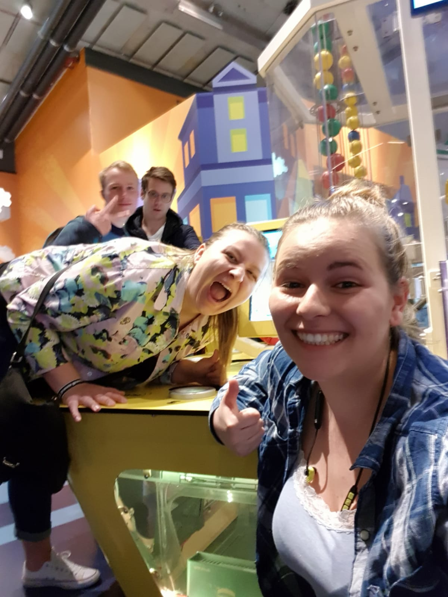

Nemo is an interactive science and technology museum based in Amsterdam. Nemo practices learning by doing approach and teaches children (and adults) about the world phenomena from physics, biology, chemistry and mathematics. Nemo is also a research center, where university researchers learn on the visitors how to encourage self-learning about the surrounding world, encouraged solemnly by their own interest.
The Machine is an exhibit, which belongs to the Technium department of the museum. It explains logistics of items from factory to the shipment in a very playful way that is easily understood also by younger visitors.
The Machine has several stations, where the visitors can help out. The one I chose as my favorite is the mechanical arm that simulates production. The colorful balls represent materials you need to produce an item. You, as a producer have to collect all of these items and put them into a tray in the correct order, so that your item can be produced. You do this by controlling a mechanical arm with a joystick and one “confirm” button. The constructors of the machine did a great job in navigating and precision of the mechanical arm, as the user has to be precise, but not too precise and everything runs smoothly in a natural tempo. If you make a mistake and pick up a wrong ball, that is a problem and you have to start over with filling a new tray.
I chose the Machine because of the size of it and a perfect alignment of tasks. It shows young children and adults that teamwork is necessary to get the job done from the beginning till the end. I also liked it because it was a circle. All balls that were used at the production station were actually used also in the loading station and then returned back into the circle. This made an impression of an infinite amount of balls circling in front of you. So impressive! In addition, I felt immediately inspired by the mechanical arm and the whole system and thought it would be a perfect way how to explain recycling to the visitors.
I was very skeptical first about going to a children’s museum, but surprisingly, I was having a lot of fun. I really enjoyed embracing the inner child in me in this museum. I especially regret not going to the chemistry lab and doing experiments there, but when looking inside, it didn’t seem like my age group and it was full of screaming kids. Shame :( I generally think that if science was taught in a way they try to teach at Nemo, more pupils and students would want or could imagine pursuing a science career. I would love to visit Nemo again, if they had something like an adult-visiting hour. And this time, I would definitely go to the chemistry lab. For me, Nemo gave a new meaning to the word museum. In addition, I also loved the location of the museum surrounded by the water as well as the impressive architecture of the building.